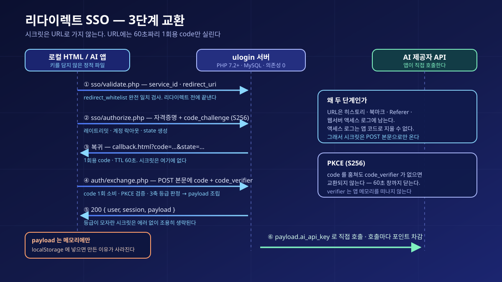
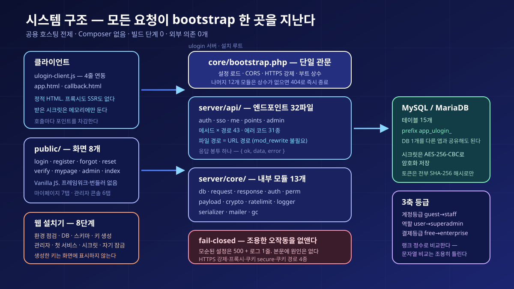
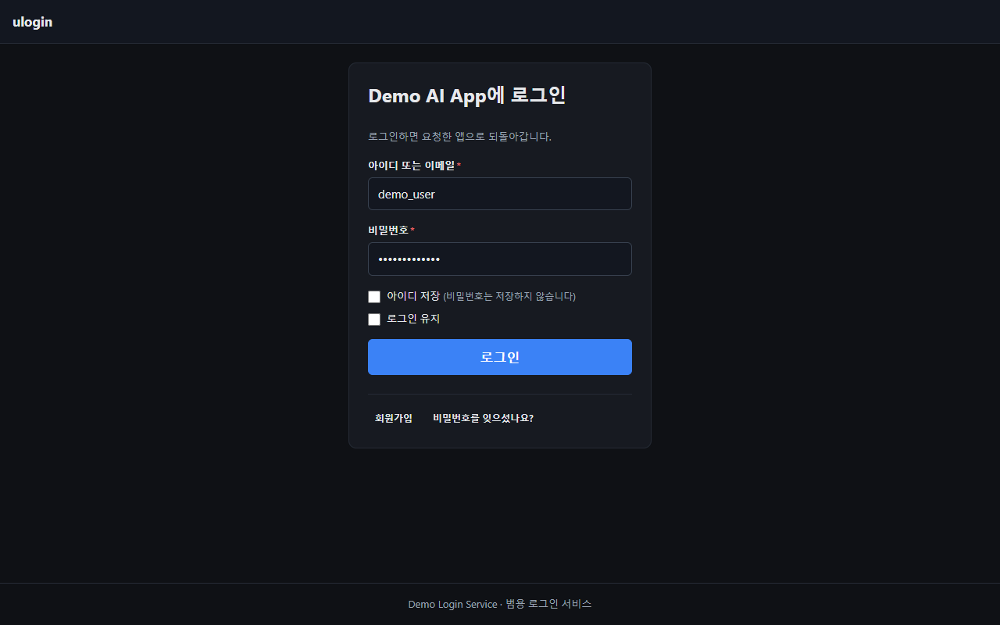
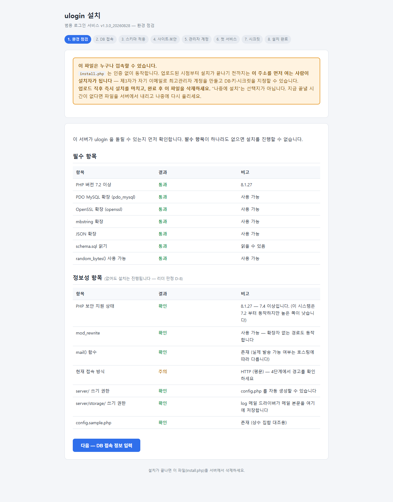
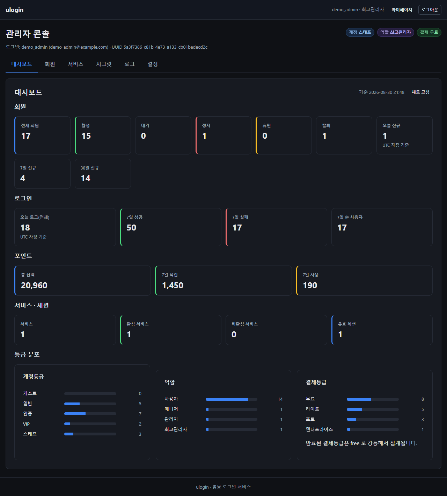
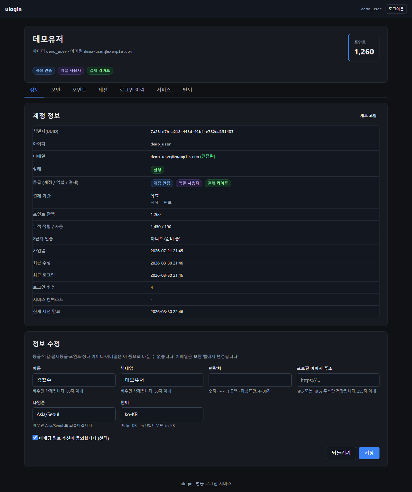

ulogin — Universal Login and SSO Server That Keeps API Keys Out of Local Apps
ulogin — 로컬 앱의 API 키를 걷어내는 범용 로그인·SSO 서버







JavaScript in a deployed page is not a secret. The moment you hand someone a local AI app with a hardcoded API key, the key ships with it — and once it leaks, someone else makes the calls while the bill stays yours. ulogin leaves the app as a single static HTML file, moves only the login to the server, and returns to each authenticated user exactly the secrets their tier allows.
It targets shared hosting — one database, no shell access, no build tools, and an interpreter that may still be PHP 7.2 — so it ships without Composer or a vendor directory and uses only built-in PHP extensions (PDO, OpenSSL, mbstring, json). Upload the folder, open the web installer once, follow eight steps, and it locks itself. PHP 7.2+ with MySQL or MariaDB, 32 endpoint files (43 method × path pairs), 15 prefixed tables, 8 static screens, 31 error codes. After four rounds of security audit and three rounds of QA it shipped to a public MIT-licensed repository with zero unresolved Critical or High findings.
Structure · Design
배포 레이아웃이 곧 설치 루트이며 세 갈래로 나뉜다 — server/(API·core·스키마·설치기), public/(화면 8개), examples/(그대로 도는 데모 앱). 모든 요청은 core/bootstrap.php 한 곳을 지난다. 이 파일이 설정 로드·CORS·HTTPS 강제·부트 상수 정의를 맡고, core/의 나머지 12개 모듈(db·request·response·auth·perm·payload·crypto·ratelimit·logger·serializer·mailer·gc)은 상단에서 그 상수가 없으면 404로 즉시 종료한다 — 웹서버 설정이 아니라 코드로 직접 실행을 막으므로 .htaccess가 무시되는 환경에서도 유효하다. 라우팅은 파일 경로 = URL 경로다. 단일 라우터를 쓰면 mod_rewrite가 없는 순간 API 전체가 404가 되므로 기각했고, 동적 세그먼트 대신 쿼리 파라미터를 쓴다(?uuid=). 응답 봉투는 전 경로에서 { ok, data, error } 하나다. API는 엔드포인트 파일 32개, 메서드×경로 조합 43개(admin 19 · auth 11 · me 10 · sso 2 · points 1), 에러 코드 31종이다. 데이터는 MySQL/MariaDB 테이블 15개에 담기고 전부 app_ulogin_ prefix를 달아 DB 하나를 다른 서비스와 공유할 수 있다. 권한은 3축이다 — 계정등급(guest 0 · basic 10 · verified 20 · vip 30 · staff 90), 역할(user 0 · manager 10 · admin 20 · superadmin 30), 결제등급(free 0 · lite 10 · pro 20 · enterprise 30)이 서로 독립이고, 각 값에 랭크 정수가 붙어 정수로 비교한다. 서비스별 오버라이드는 올려주기만 하고(grant-only) 내리지 못한다. 시크릿 금고는 AI 키 같은 서비스 시크릿을 AES-256-CBC로 DB에 암호화 저장하고 시크릿마다 최소 등급 3개를 걸며, 통과한 것만 로그인 응답의 payload로 나간다 — 미달분은 에러가 아니라 조용한 생략이다. 목록·상세·생성·수정 응답의 secret_value는 항상 마스킹되고, 평문은 superadmin의 단일 경로로만 나가면서 그 조회가 감사 로그에 남는다. 세션은 쿠키에 session_id가 아니라 access_token을 담고 조회를 access_token_hash 한 경로로 통일했으며, 토큰은 전부 SHA-256으로만 저장한다. 포인트는 전역 잔액 하나에 멱등키를 지원해 같은 키로 재요청해도 중복 차감되지 않는다. 프론트는 정적 HTML 8개(login·register·forgot·reset·verify·mypage·admin·index)와 Vanilla JS이며 프레임워크·번들러·node_modules가 없고, innerHTML 계열 실사용은 0건이다. 마이페이지는 7탭(정보·보안·포인트·세션·로그인 이력·서비스·탈퇴), 관리자 콘솔은 6탭(대시보드·회원·서비스·시크릿·로그·설정)에 전역 설정 12키를 갖는다. 배포는 폴더째 업로드 후 브라우저로 웹 설치기를 한 번 여는 것으로 끝나며, 8단계(환경 점검 → DB 접속 → 스키마 적용 → 사이트·전송 보안 → 관리자 계정 → 첫 서비스 → 시크릿 → 자기 잠금)를 거친 뒤 설치기가 스스로를 3중으로 잠근다. 연동하는 앱 쪽은 ulogin-client.js 한 줄과 초기화 네 줄이면 된다. 버전은 네 번 올랐다 — v1.0.0(초기 구축, 파일 74개), v1.1.0(PHP 7.2 호환 및 fail-closed 3종), v1.2.0(자산 캐시 무효화, 실 Apache 실측), v1.3.0(공개 패키징 — 개인정보 정리, 한/영 README, 실제 스크린샷 35장, 포트폴리오 문서). v1.3.0은 server/api/·server/core/가 v1.2.0과 바이트 동일해 연동 중인 앱이 코드를 고칠 필요가 없다.
Design goals
출발점은 단순한 사실이다 — 브라우저가 실행하려면 JavaScript는 평문이어야 하므로, 배포된 페이지의 키는 소스 보기나 개발자도구를 여는 누구나 그대로 읽는다. 난독화는 실행 직전에 되풀리고 Network 탭에는 Authorization 헤더가 그대로 찍힌다. 그렇다고 서버를 세우면 정작 만들고 싶었던 AI 앱 대신 회원가입·로그인·비밀번호 찾기·세션·과금·관리자 화면을 만들게 된다. 그래서 중간을 골랐다 — 서버는 로그인만 맡고 앱은 여전히 정적 HTML 한 장이며, 바뀌는 것은 키의 출처 하나다. 기성 IdP를 먼저 검토했지만 셋 다 걸렸다. Firebase Authentication은 "등급별로 키를 반환한다"를 하려면 Cloud Functions가 필요해 결국 서버를 또 만드는 일이 되고, Auth0는 JWT에 키를 실으면 그 키가 클라이언트 저장소에 그대로 남아 하드코딩을 JWT로 옮긴 것에 지나지 않으며, Keycloak은 JVM 프로세스 상주를 요구해 공용 호스팅에서 쓸 수 없다. 더 근본적으로, 표준 IdP의 역할은 "이 사람이 누구인지"를 증명하는 것인데 이 프로젝트에 필요한 것은 "이 사람에게 어떤 비밀값을 내려줄 것인지"였다 — OIDC의 id_token에 서비스 시크릿을 담으면 그 시크릿은 토큰이 가는 모든 곳으로 함께 간다. 그래서 시크릿 반환을 별도의 1회용 교환 단계로 떼어 냈다. 시크릿을 리다이렉트 URL에 실을 수 없기 때문이다 — URL은 브라우저 히스토리·북마크·Referer 헤더·웹서버 액세스 로그·프록시 로그에 전부 남고, 액세스 로그는 애플리케이션 코드가 돌기도 전에 쓰이므로 지울 수 없다. 리다이렉트에는 60초짜리 1회용 code만 싣고, 앱이 그 code를 POST 본문으로 바꿔 시크릿을 받는다. PKCE(S256)가 남은 60초 창까지 닫는다 — code를 훔쳐도 앱 메모리를 떠나지 않는 code_verifier가 없으면 교환되지 않는다. 권한을 세 축으로 나눈 것도 실제 운영에서 생기는 조합 때문이다 — "이메일 미인증이지만 결제한 사용자", "관리자인데 무료 등급", "결제등급은 만료됐지만 계정은 여전히 verified"는 축을 합치면 표현할 수 없다. 각 축에 랭크 정수를 둔 이유는 더 직접적이다: 문자열로 비교하면 사전순 때문에 'enterprise' >= 'lite'가 거짓이 되어 최상위 고객만 게이트를 통과하지 못하는 상태가 예외 하나 없이 배포된다. 랭크를 10씩 띄운 것은 중간 등급을 나중에 끼워 넣기 위해서고, 0은 "전원 통과"를 뜻해 설치기와 관리자 API가 랭크 0 값(free·guest·user)을 게이트로 세지 않게 하는 근거가 된다. 배포 환경도 설계의 절반을 결정했다 — DB를 하나만 주니 prefix로 공유하고, SSH가 없으니 외부 의존을 0개로 하고, 빌드 도구가 없으니 Vanilla JS로 가고(그 대가로 CSP의 'unsafe-inline'을 지우지 못했으며 connect-src 'self'로 유출 경로만 막았다), mod_rewrite가 없을 수 있으니 파일 경로를 URL로 삼았다. 마지막 원칙은 fail-closed다 — 설정이 틀렸는데 응답만 정상인 경로를 없애, HTTPS 강제와 BASE_URL이 어긋나거나 프록시 설정의 짝이 맞지 않거나 평문 HTTP에서 secure 쿠키를 발급하려 하면 그 자리에서 500으로 멈추고 서버 로그에 사유를 한 줄 남긴다. 이 원칙이 실제 결함도 하나 잡았다 — setcookie()의 옵션 배열은 PHP 7.3+ 전용이라 7.2에서 넘기면 만료 인자로 캐스팅되어 SameSite가 통째로 사라지고 HttpOnly·Secure도 기본값으로 떨어지는데, 오류가 하나도 나지 않는다. 버전 분기 래퍼로 7.2에서는 Set-Cookie 헤더를 직접 조립하게 하고, 값 검증을 버전 분기보다 앞에 두어 두 분기가 같은 지점에서 같은 이유로 실패하도록 만들었다. 마지막으로 문서에서 완성된 것처럼 쓰지 않는 것도 목표에 넣었다 — 2FA 미구현, 서비스별 포인트 미연결, payload_fields가 저장·반환만 되고 실제 필터링에 쓰이지 않는다는 사실("동작하지 않는 보안 통제이므로 기대하지 마라"), PKCE 미강제, 암복호 계층의 MAC 부재 같은 잔여 Medium·Low 항목, 그리고 실 호스팅의 PHP 7.2 인터프리터·nginx·실제 메일 발송을 검증하지 못했다는 사실까지 공개 문서에 그대로 적었다.